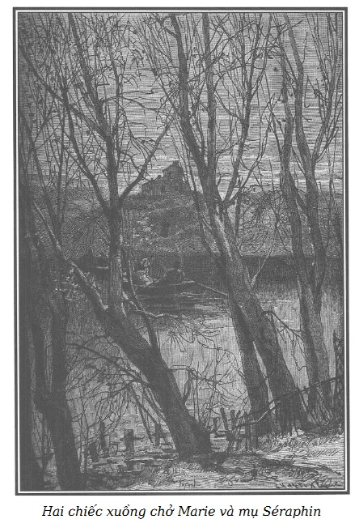

CÁI THUYỀN
– Ô này, đã đi rồi sao?
– Đi! Chẳng còn được nghe những lời dạy cao quý của người! Không, thề có trời, con vẫn ở lại đây, thưa thầy…
(Wolfgang, cảnh III)
Trong đêm tối, hòn cù lao nơi gia đình Martial ở trông đến khiếp. Nhưng dưới ánh sáng rực rỡ ban ngày thì không gì tươi tắn hơn nơi cư trú chết tiệt ấy, với hàng cây dương và cây liễu viền ven bờ, mặt đất phủ cỏ dày, trên đó ngoằn ngoèo rắn lượn một vài lối đi rải cát vàng. Trên hòn cù lao còn có một vườn rau nhỏ và một số kha khá cây ăn quả. Giữa vườn cây ăn quả có một túp nhà tranh, nơi Martial muốn sống cùng François và Amandine. Ở bên này mũi đảo có một loại rào chắn làm bằng những cọc thật to dùng để giữ cho đất khỏi lở.
Trước nhà, gần sát bên một vòm cây tươi xanh có lưới đan mắt cáo tạo dáng cho nho và cây hoa bia leo thành hình bán nguyệt, bên dưới kê bàn cho khách uống rượu ngày hè.
Ở một bên chái nhà, tường sơn trắng và lớp ngói là nơi xếp củi, trên có vựa, hình thành một chái nữa, thấp hơn toàn bộ khu nhà chính. Gần sát phía trên cái chái ấy có một cửa sổ với lỗ ô bịt tôn và cố định ở phía ngoài bởi hai thanh sắt đóng ngang vào tường bằng đinh mũ kiên cố.
Ba cái xuồng neo vào cọc bên thuyền, đung đưa theo sóng. Ngồi xổm trong lòng một cái, Nicolas kiểm tra lại cái xu páp mới lắp xem đã nhạy chưa.
Đứng trên một ghế băng đặt phía ngoài vòm cây, Quả Bầu khum khum bàn tay trước trán, ngóng nhìn về phía xa xa nơi Séraphin và Marie đang tiến về cù lao.
– Vẫn chưa thấy ma nào xuất hiện, chẳng có già, cũng không có trẻ, – Quả Bầu tụt khỏi ghế nói với Nicolas – lại như hôm qua! Đợi mất công toi! Sau nửa giờ nữa nếu hai người đàn bà đó không đến thì vù thôi! Phi vụ cùng với Cánh Tay Đỏ trúng lớn hơn nhiều, lão đang chờ ta đấy. Mụ thầu việc tất đến nhà lão, ở đường Élysées lúc năm giờ, chúng ta phải đến trước mụ. Sáng nay mụ Vọ đã nhắc đi nhắc lại mãi điều ấy.
– Mày nói phải, – Nicolas càu nhàu rời xuồng, – trời đánh cái con mụ già làm mình chờ đợi mất công toi. Cái xu páp nhạy tuyệt! Trong cả hai phi vụ, biết đâu chẳng vớ được một vụ.
– Vả lại Cánh Tay Đỏ và Cá Trê cần phải có ta. Chỉ có hai thằng với nhau thì chúng chẳng làm nên công trạng gì.
– Đúng đấy, vì khi hành sự thì Cánh Tay Đỏ phải ra ngoài quán rượu để canh chừng mà Cá Trê thì không đủ sức để tống được mụ thần việc vào thần rượu. Mụ già ấy sẽ kháng cự đấy, chẳng chơi đâu!
– Thế có phải là mụ Vọ đã vừa cười vừa bảo là mụ nhốt Thầy Đồ ở trọ trong cái hầm ấy?
– Không phải cái hầm ấy đâu. Trong cái hầm khác sâu hơn nhiều và khi nước to thì ngập hết kia.
– Thầy Đồ mà phải trốn hầm à? Một mình trong đó, lại mù nữa!
– Có nhìn rõ thì cũng chẳng thấy cóc gì, cái hầm tối như hũ nút.
– Mặc thây lão! Lão sẽ hát đủ mọi bài lão thuộc cho khuây, hát chán cũng chẳng còn biết làm gì cho hết thì giờ.
– Mụ Vọ nói là lão săn chuột cho đỡ buồn, mà ở đấy thì chuột nhiều vô cùng!
Nicolas cười gằn, chỉ cái cửa sổ bịt tôn:
– Trong số những đứa trốn thui trốn lủi, buồn chết rũ đi được, có một đứa đang tức đến ứa máu trong kia kìa!
– Mặc hắn! Hắn ngủ đấy! Từ sáng tới giờ, không thấy đập phá nữa, mà con chó cũng câm tịt.
– Có khi hắn đã bóp chết con chó để hốc, đã hai ngày nay, cả hai đều nhịn đói nhịn khát trong đó mà!
– Thây kệ! Nếu thích, Martial còn kéo dài được thêm ít lâu đấy! Khi nào hắn chết, người ta sẽ coi là chết bệnh, chẳng ai lời ra tiếng vào đâu!
– Mày tưởng thế sao?
– Chắc chắn! Sáng hôm nay, bà già đi Asnières, đã gặp bố Ferot dân chài, thấy bố cứ băn khoăn không hiểu sao thằng bạn vong niên Martial của bố mất mặt suốt hai ngày rồi. Bà già mới bảo là hắn ốm liệt giường và mọi người đã hết hy vọng. Bố Ferot mắc câu ngay, hẳn sẽ bô bô cho mọi người biết và khi sự việc đã rồi thì ai nấy đều cho đó là chuyện bình thường thôi.
– Đúng thế, nhưng hắn đâu đã chết ngay. Bằng cách này thì còn lâu!
– Thế anh còn muốn gì nữa? Không còn cách nào khác để khử hắn cho xong! Cái thằng Martial hung đồ ấy khi đã nóng máu lên thì ác hơn quỷ sứ, lại còn khỏe như vâm nữa. Đã thế, vốn sẵn ngờ vực chúng ta, làm sao đến gần hắn mà không nguy hiểm? Giờ thì cửa đã có đinh chốt chắc chắn bên ngoài rồi, hắn còn làm gì được nữa! Cửa sổ có chấn song kia mà!
– Này, hắn có thể nạy các song cửa. Hắn sẽ lấy dao găm khoét vào thạch cao đấy, nếu em không đứng sẵn trên thang lấy rìu chặt mỗi khi hắn sắp sửa giở trò.
Thằng ăn cắp cười khẩy:
– Canh gác thế chứ! Mày khoái nhé!
– Thì cũng phải để cho anh có thì giờ lấy tôn lá ở chỗ bố Micou về đây chứ!
– Hắn tức đến hộc máu ra đấy nhỉ, cái thằng anh ấy!
– Hắn nghiến răng như bị ma làm. Hắn đã lấy gậy vụt lấy vụt để thật mạnh qua song cửa để xua em ra xa nhưng chỉ rảnh có một tay, hắn không thể nạy bật song cửa ra được. Cứ là phải làm như thế mới xong!
– Cũng may là trong buồng ấy không có lò sưởi!
– Cánh cửa lớn thì chắc, mà hai tay hắn thì đã bị thương, nếu không thế thì hắn khoét thủng cả sàn nhà!
– Còn các cái xà, liệu hắn có chui qua được không?
– Không đâu, không đâu! Còn xơi! Các lỗ ô cửa đã bịt tôn lá, lại có nẹp sắt chốt ngang, cánh cửa lớn đóng chốt bên ngoài bằng đinh thuyền chín phân. Giá lại đóng bằng gỗ sến và cặp chì nữa thì cỗ quan tài của hắn chắc phải biết đấy!
– Này, khi được tha, con Sói Cái mà đến đây tìm người yêu thì hắn phải réo đến hết hơi nhỉ?
– Thế thì bảo với ả là: Cứ việc mà tìm!
– Về việc này, mày biết không, nếu mẹ mà không nhốt hai đứa con nít ăn mày ấy, thì hẳn chúng đã có thể như chuột cống gặm thủng cả cửa để cứu Martial chưa biết chừng. Từ ngày cái thằng oắt khốn nạn François bắt đầu ngờ là chúng ta nhốt thằng anh cả thì nó như là quỷ sứ.
– Úi dà! Nhưng khi ta sắp sửa lên bờ, liệu có nên để cho chúng nó ở cái phòng bên trên không? Cửa sổ phòng chúng nó không có lưới sắt, chúng chỉ việc trèo xuống và ra ngoài…
Vừa lúc đó có tiếng la hét và tiếng khóc từ cái nhà lớn vẳng đến làm Quả Bầu và Nicolas phải chú ý.
Cửa nhà trệt từ trước đến giờ vẫn mở bỗng đóng sập lại rất mạnh. Một phút sau, bộ mặt nhợt nhạt và ghê gớm của mẹ Martial xuất hiện nơi chấn song cửa sổ nhà bếp.
Mụ góa giơ cánh tay gầy gò xương xẩu ra vẫy mấy đứa con lại gần.
– Này, có lộn xộn đấy! Tao đoán là vẫn cái thằng François chống cự. – Nicolas nói. – Đồ ăn mày Martial! Không có hắn thì thằng nhóc còn cậy vào ai! Này, phải ngóng cho kĩ đấy, thấy hai con mái xuất hiện, thì gọi tao nhé!
Trong khi Quả Bầu lại trèo lên ghế băng theo dõi từ xa mụ Séraphin và Marie thì Nicolas đi vào nhà.
Amandine, quỳ giữa sàn nhà bếp, đang nức nở xin tha cho anh François của bé.
Hầm hầm tức tối, đe dọa, bị dồn vào một góc tường của gian nhà, François lăm lăm giơ cao cái rìu của Nicolas, ra mặt kiên quyết chống lại mẹ đến cùng.
Vẫn thản nhiên như không, chẳng nói chẳng rằng, mụ góa chỉ cho Nicolas lối vào hầm rượu thông với nhà bếp cửa mở hé, ra hiệu cho thằng con lớn nhốt François vào trong.
– Không được nhốt tôi vào trong ấy đâu! – Cậu bé quả quyết thét to, hai mắt quắc lên, sáng rực như mắt mèo rừng. – Các người định để tôi với Amandine chết đói như anh Martial à?
– Mẹ ơi, vì tình yêu Chúa, hãy để chúng con ở trong buồng trên gác như hôm qua ấy. – Đứa con gái hai tay chắp lại, van xin. – Trong hầm tối, chúng con sợ!
Mụ góa cáu kỉnh nhìn Nicolas như cảnh cáo anh ta lừng khừng chưa thi hành lệnh của mụ, rồi dứt khoát và oai vệ chỉ thẳng vào François.
Thấy anh ta tiến về phía mình, cậu bé tuyệt vọng lăm lăm lưỡi cái búa và thét to:
– Ai mà muốn nhốt tôi vào đấy, thì dù có là mẹ, là anh, là chị Quả Bầu đi nữa, mặc kệ, cứ cái rìu này tôi bất chấp!
Cũng như mụ góa, Nicolas thấy nhất thiết phải ngăn cho được hai đứa trẻ cứu Martial trong khi không còn ai ở lại trông nhà, và cũng để giấu chúng cái cảnh sắp xảy ra, vì từ cửa sổ trông thấy được con sông, có thể mục kích được chuyện dìm Marie.
Hung tợn nhưng cũng nhát, Nicolas lo bị em phang cho đòn chí mạng, nên ngần ngại không dám lại gần.
Thấy thằng con lớn như thế, mụ góa điên tiết đẩy sấp đẩy ngửa hắn đến trước François.
Nhưng Nicolas lại lùi lần nữa và quát to:
– Nó mà gây thương tích cho tôi thì tôi làm thế nào, hở bà? Mẹ thừa biết là chốc nữa là tôi phải dùng đến hai cánh tay này, thế mà đến giờ đòn của thằng khốn Martial đang còn ê ẩm đấy!
Mụ góa nhún vai khinh bỉ và tiến một bước về phía François.
François nổi giận:
– Mẹ đừng có lại gần, mẹ sẽ phải trả nợ cho những trận đòn mẹ đánh hai chúng tôi đấy!
Amandine lo sợ nói to:
– Anh ơi, đành chịu nhốt vậy! Ôi, lạy Chúa, đừng đánh mẹ!
Bỗng Nicolas thoáng thấy trên một mặt ghế tấm chăn len rộng dùng để là quần áo, anh ta với lấy, mở ra một nửa và khéo léo quẳng lên đầu François khiến cậu bé bị chăn trùm vướng víu chân tay, cố mấy cũng không sử dụng được vũ khí.
Thế là Nicolas chồm lên người cậu, và được mẹ giúp bế phắt cậu bé vào trong hầm.
Amandine đang quỳ trên sàn bếp, vừa thấy anh như thế, lập tức vùng dậy thật nhanh và mặc dù sợ chết khiếp đi được, cũng vẫn chạy theo cho kịp vào trong hầm tối với anh.
Cửa bị khóa đến hai vòng, nhốt hai anh em lại.
Nicolas gầm lên:
– Cũng tại cái thằng khốn Martial cả mà hai đứa oắt này bây giờ hỗn láo, hung hãn quá thể!
Mụ góa có vẻ ngẫm nghĩ và rùng mình:
– Từ sáng đến giờ không thấy động tĩnh gì hết trong buồng nó, không hề!
– Bà già này! Nói với bố già Ferot và dân chài ở Asnières là Martial ốm liệt giường đã hai ngày, sắp chết đến nơi, thì bà cừ thật! Như thế thì khi tất cả đã xong, không còn ai ngạc nhiên nữa!
Sau một hồi yên lặng và dường như không muốn suy nghĩ gì thêm nữa cho mệt óc, mụ góa bỗng nhiên bảo:
– Mụ Vọ đến đây khi tao đang ở Asnières à?
– Có đấy, bà già ạ!
– Tại sao mụ ấy không ở lại để cùng chúng ta đến nhà Cánh Tay Đỏ? Tao ngờ mụ này lắm!
– Ô hay! Bà thì bà ngờ hết cả thiên hạ, bà già ạ! Hôm qua thì Cánh Tay Đỏ, hôm nay lại đến mụ Vọ.
– Cánh Tay Đỏ được tự do, còn con tao thì lại bị tù ở Toulon, mặc dù cả hai đứa đều dính vào một vụ trộm.
– Lúc nào bà cũng nhắc đến chuyện ấy. Cánh Tay Đỏ thoát được vì nó “cáo” lắm, có thế thôi! Mụ Vọ không ở lại đây vì mụ có hẹn lúc hai giờ với cái ông cao lớn mặc đại tang gần Đài Thiên văn. Ông này đã khoán cho mụ bắt cóc đứa con gái nhà quê với sự giúp đỡ của Thầy Đồ và thằng Tập Tễnh… Cả thằng Cá Trê đánh cỗ xe mà ông ấy thuê để dùng vào việc ấy nữa. Bà già thấy không? Sao bà lại cho là mụ Vọ tố cáo chúng ta, có phải vì rằng mụ ấy hở cho chúng ta biết về các vụ làm ăn của mụ, mà mình thì lờ tịt những vụ đánh quả của bà? Mụ ấy thì biết gì đến vụ dìm người chốc nữa? Hãy yên trí, bà già ơi! Sói không ăn thịt nhau đâu. Hôm nay tốt ngày đấy! Tôi cứ nghĩ đến mụ thầu việc dắt mối lúc nào cũng đem theo người chừng hai mươi nghìn đến ba mươi nghìn franc kim cương mà trước hai giờ sáng chúng ta đã chôm được trong cái hầm của Cánh Tay Đỏ! Ba mươi nghìn franc kim cương, bà tính xem!
Mụ góa ngờ vực:
– Trong khi chúng ta chịt cổ mụ ấy thì Cánh Tay Đỏ ở bên ngoài quán rượu của hắn!
– Thế bà già muốn rằng hắn ở đâu được? Nếu có ai đến nhà hắn, liệu hắn có phải lên tiếng trả lời và ngăn không cho người ta lại gần nơi chúng ta hành sự hay không?
Bỗng Quả Bầu gọi to:
– Nicolas, Nicolas! Hai người đàn bà đến!
– Nhanh nhanh lên bà già, choàng khăn vào! Tôi sẽ đưa bà sang bên kia bờ, tiện thể. – Nicolas giục.
Mụ góa đã thay cái khăn mỏ quạ bằng một cái mũ trùm bằng vải tuyn đen. Mụ khoác một cái khăn santo bằng vải rằn ri xám và trắng, giấu cái chìa khóa sau ô cửa tầng trệt rồi theo con ra bến.
Thẫn thờ, mụ ngoái nhìn khá lâu cửa sổ phòng Martial, nhíu đôi mày, mím môi, rồi bỗng rùng mình lần nữa, mụ khẽ lẩm bẩm:
– Lỗi tại nó, trị nó thôi!
Quả Bầu chỉ vào mụ Séraphin và Marie đang đi xuống bờ sông theo con đường nhỏ vòng quanh một vách đứng khá cao, từ chỗ đó nhìn bao quát được một cái lò thạch cao. Cô ả reo to:
– Nicolas, thấy họ không, chỗ kia kìa! Dọc cái mô đất ấy, có một con bé nhà quê và một mụ thị dân đấy.
– Đợi mật hiệu đã, khéo lại hỏng việc.
– Anh mù hay sao? Thế anh không nhận ra mụ đàn bà to béo đến đây mới hôm kia à? Hãy nhìn cái khăn san màu da cam kia! Và cái con bé nhà quê ấy, sao mà nó vội vã thế! Con bé đang còn nghệt quá, rõ là nó còn chưa biết điều gì đang đợi nó lúc này.
– Đúng! Tao đã nhận ra mụ đàn bà to béo. Nào, ngứa tay ngứa chân lắm rồi! Chà, Quả Bầu, cứ thế mà làm cho cừ nhé! Tao chở mụ già và con bé trong cái xuồng có xu páp, mày sang cái xuồng khác và chèo theo tao, hai cái nối nhau, cái nọ sau cái kia. Chú ý chèo cho đúng nhịp để chỉ cần phắt một cái là tao đã nhảy sang xuồng mày được ngay sau khi mở nắp xu páp và xuồng tao chìm dần.
– Đừng lo! Đâu có phải lần đầu em cầm đến mái chèo, đúng không?
– Tao không sợ chết đuối đâu, mày cũng biết tao bơi cừ như thế nào rồi! Nhưng giả sử là nếu tao không nhảy kịp sang xuồng mày, thì hai con mái, giãy giụa để khỏi chết đuối, có thể bám chặt lấy tao và, xin đủ, tao chẳng muốn nốc no nước cùng bọn chúng.
– Mụ già đã vẫy khăn làm hiệu, họ đã đến bến sỏi đấy!
– Nào, đi thôi, bà già, – Nicolas đẩy xuồng ra, – xuống cái xuồng có xu páp ấy. Như vậy hai người đàn bà kia sẽ không nghi ngờ, còn Quả Bầu nhảy xuống cái xuồng kia đi, và chèo cho khỏe lên! Chà, này, cầm lấy cái sào chống, để bên cạnh người ấy. Nó nhọn như mũi giáo, được việc đấy! Thôi, lên đường. – Thằng ăn cướp vừa nói vừa đặt vào trong xuồng của em nó cái sào chống dài bịt sắt nhọn ở một đầu.
Chẳng mấy chốc cả hai cái xuồng do anh em Quả Bầu chèo đã cập bến. Ở đó, mụ Séraphin và Marie đã đợi được vài phút.
Trong khi Nicolas buộc xuồng vào một cái cọc đóng trên bờ, mụ Séraphin lại gần và thì thầm rất nhanh:
– Nói là bà Georges đang đợi chúng tôi nhé!
Rồi mụ cao giọng:
– Chúng tôi đến hơi chậm, phải không, chàng trai?
– Vâng, thưa quý bà! Bà Georges đã nhắc đến bà nhiều lần rồi đấy.
– Cháu thấy không? Bà Georges đang đợi chúng ta. – Mụ Séraphin quay lại nói với Marie, cô dù tin tưởng phần nào nhưng vẫn cứ còn hồi hộp, lo lắng trước vẻ mặt dữ dằn của mụ góa, Quả Bầu và Nicolas.
Tên bà Georges được nhắc đến làm cô vững dạ hơn một chút:
– Cháu cũng rất nóng lòng được thấy bà Georges, may sao mà đường không quá xa.
Mẹ Séraphin bảo:
– Bà phu nhân thân mến ấy sẽ hài lòng biết mấy!
Rồi quay sang Nicolas:
– Nào, chú mày, cho thuyền vào gần bờ thêm tí nữa để chúng tôi lên chứ!
Mụ lại nói khẽ:
– Phải dìm con bé này cho kỳ được đấy, nếu nó có nổi lên mặt nước thì phải dìm tiếp mới được.
– Được thôi! Còn bà thì đừng có sợ đấy! Khi nào tôi ra hiệu, cứ đưa tay cho tôi. Chỉ mình nó chìm thôi! Tất cả đã chuẩn bị sẵn, bà chẳng có gì phải sợ. – Nicolas khẽ trả lời.
Rồi lạnh lùng, chẳng chút động tâm trước sắc đẹp cũng như tuổi trẻ của Marie, anh ta đưa tay cho cô. Cô thiếu nữ nhẹ nhàng vịn tay anh ta bước xuống thuyền.
– Đến lượt bà. – Lần này anh ta đưa tay cho mụ Séraphin.
Có phải là do linh cảm mà nghi ngờ, hoặc do sợ là không nhảy kịp thời khỏi cái thuyền chở Nicolas và Marie lúc nó sắp đắm, mụ quản gia của Ferrand lùi lại bảo Nicolas:
– Tôi lên xuồng kia! – Và mụ xuống thuyền đứng gần Quả Bầu.
– May quá, được thôi. – Nicolas đưa mắt cho em gái.
Bằng đầu mái chèo, anh ta đẩy mạnh xuồng ra.
Quả Bầu cũng làm thế khi mụ Séraphin đã đứng bên cạnh.
Im lặng đứng trên bờ sông, dửng dưng trước cảnh ấy, mụ góa trầm tư mê mải, trừng trừng nhìn về phía cửa sổ phòng Martial, từ bến sỏi qua dãy cây dương vẫn nhìn thấy rõ.
Trong khi đó, hai cái xuồng, một cái chở Marie và Nicolas, cái sau chở mụ Séraphin và Quả Bầu, chầm chậm rời xa bờ.

.